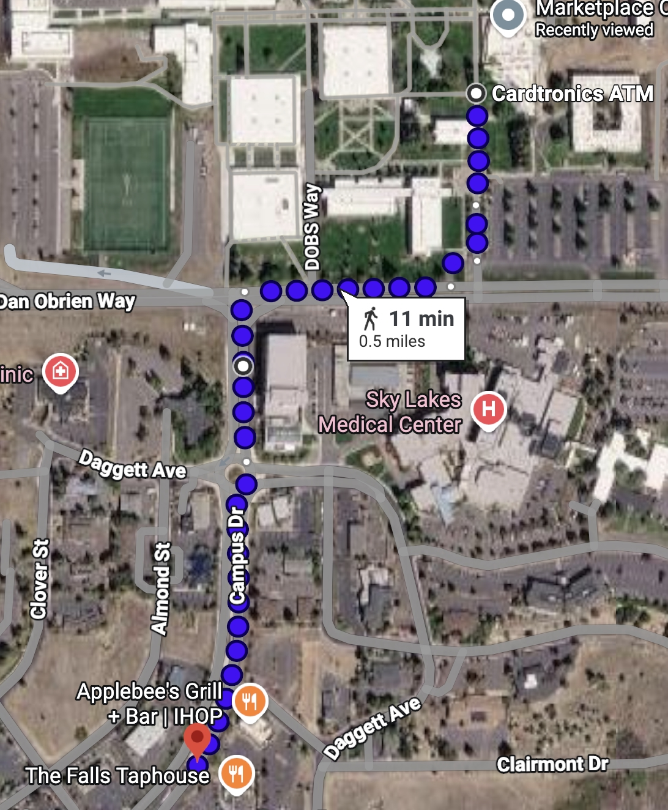
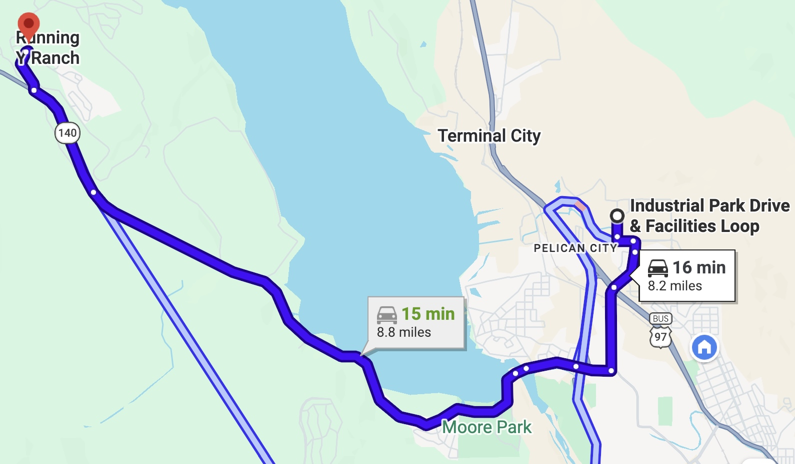

APS Northwest Section — 2026 Annual Meeting
Oregon Institute of Technology · Klamath Falls, Oregon · June 4–6, 2026
Welcome to the 2026 Annual Meeting of the APS Northwest Section! We are delighted to host you at OIT. Registration and the information desk are in the Auditorium Lobby (College Union, main floor).
Schedule and abstracts in the APS meeting archive
At a Glance
Thursday, June 4 — 4:00–5:00 p.m.: Registration, CU Auditorium Lobby — 5:00 p.m.: Welcome Reception, The Falls Taphouse
Friday, June 5 — OIT College Union, 8 a.m.–3:45 p.m.; banquet at Running Y Resort, 6 p.m. — Breakfast · Plenary sessions · Lunch · Parallel contributed sessions · Banquet
Saturday, June 6 — OIT College Union, 8 a.m.–3:30 p.m. — Breakfast · Plenary sessions · Lunch & poster session · Contributed sessions · Closing remarks
Schedule
Thursday, June 4
| Time | Activity | Location |
|---|---|---|
| 4:00–5:00 p.m. | Registration | CU Auditorium Lobby |
| 5:00 p.m. | Welcome Reception | The Falls Taphouse |
Friday, June 5 — OIT College Union
| Time | Activity | Location |
|---|---|---|
| 8:00 a.m. | Breakfast | Auditorium Lobby |
| 9:00 a.m. | Plenary I — Heath · Acres · Hart | Auditorium |
| 10:48 a.m. | Coffee Break | Auditorium Lobby |
| 11:05 a.m. | Plenary II — Oliver · Frey | Auditorium |
| 12:30 p.m. | Lunch | Crater Lake Complex |
| 2:00–2:45 p.m. | Condensed Matter | Auditorium |
| Nuclear & Particle Physics | CLC Mt Scott | |
| 2:45 p.m. | Coffee Break | Auditorium Lobby |
| 3:00–3:45 p.m. | Biophysics & Nonlinear Dynamics | Auditorium |
| General Physics | CLC Mt Scott | |
| 3:45 p.m. | Adjourn; travel to Running Y Resort | |
| 6:00 p.m. | Banquet Reception | Running Y Resort |
| 6:45 p.m. | Dinner & Keynote — Ginsberg | Running Y Resort |
Saturday, June 6 — OIT College Union
| Time | Activity | Location |
|---|---|---|
| 8:00 a.m. | Breakfast | Auditorium Lobby |
| 9:00 a.m. | Plenary III — Murray · Baio · Coates | Auditorium |
| 10:48 a.m. | Coffee Break | Auditorium Lobby |
| 11:05 a.m. | Plenary IV — Mace · Vartanyan | Auditorium |
| 12:30 p.m. | Lunch & Poster Session | Crater Lake Complex |
| 2:00–2:30 p.m. | Astrophysics & Cosmology | Auditorium |
| 2:30–2:45 p.m. | Coffee Break | Auditorium Lobby |
| 2:45–3:30 p.m. | Nuclear & Radiation Physics | Auditorium |
| 3:30 p.m. | Closing Remarks | Auditorium |
Venue and Meals
Registration and information desk — Auditorium Lobby, College Union main floor. Nametags and the LOC are here throughout the meeting.
Crater Lake Complex is directly up the stairs from the Auditorium Lobby. The poster session, Friday and Saturday lunches, and Friday’s parallel session room (CLC Mt Scott) are all here.
Welcome Reception — Thursday, June 4
5:00 p.m. · The Falls Taphouse 2215 Shallock Ave, Klamath Falls, OR 97601
A 10-minute walk from the College Union. Food and drink — including a large selection of local microbrews — are available for purchase. We’ll be on the rooftop deck, weather permitting. Walking map on page 5.
Meals
Breakfast (8:00–9:00 a.m.) and lunch (12:15 p.m.) are provided each day at the College Union. All coffee breaks include refreshments in the Auditorium Lobby.
Dietary needs noted at registration will be accommodated.
Banquet & Keynote — Friday, June 5
6:00 p.m. reception · 6:45 p.m. dinner · Keynote to follow
Running Y Resort — Woodlands Ballroom 5500 Running Y Road, Klamath Falls, OR 97601 (541) 850-5500
Keynote: Matt Ginsberg (Google DeepMind) Physics and AI: Separating the Hype from the Reality
About 9 miles from OIT, 15 minutes by car. Take OR-140 toward Medford; Running Y is on the right. Carpooling is encouraged. Banquet tickets are available at the registration desk. Driving map on page 5.
Parking
OIT’s campus is compact — no lot is more than a five-minute walk from the College Union.
Avoid lots A, B, C, P, and Q (reserved for students and faculty during the week). Look for General Parking signs, or use:
- Lots E and F — off Industrial Park Drive (large; usually plentiful)
- Lots G and H — near Cornett Hall (large; usually plentiful)
Parking will be tighter on Friday (last day of class for OIT students) and easy on Saturday.
Campus Map
(Download the PDF for the full-page map with lot labels.)
Directions
Walking to The Falls Taphouse (10 minutes from the College Union)

Driving to Running Y Resort (9 miles via OR-140, about 15 minutes)
